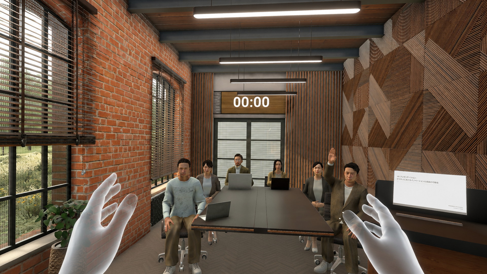

Practice. Feedback. Real Growth.
첫 번째 발표 연습을
계획해 보세요.
발표 제목과 연습 시간을 정하고, 완성한 계획을 보관하세요. 다시 열어 확인하거나 필요 없어진 계획은 취소할 수 있습니다.
새 훈련 계획 만들기수업용 중간 프로토타입입니다. 녹음과 실제 발표 훈련은 시작되지 않습니다.

HOW IT WORKS
간단한 세 단계로 시작해요.
발표를 준비하는 사람이 연습 계획을 만들고 관리하는 흐름입니다.
- 01
발표 정보
발표 제목과 발표자 이름을 입력해요.
- 02
훈련 조건
연습 시간과 질의응답 포함 여부를 골라요.
- 03
저장과 관리
계획을 보관하고 다시 열거나 취소해요.
NEW SESSION
발표 훈련 계획 만들기
이전 단계로 돌아가도 입력한 내용은 유지됩니다.
- 1 발표 정보
- 2 훈련 조건
- 3 내용 확인
MY PRACTICE
내 훈련 계획 0
저장한 계획을 다시 열거나 취소할 수 있습니다. 내용은 이 브라우저에만 보관됩니다.